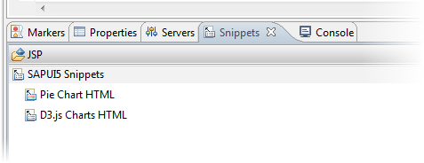

SAPUI5 Snippets
SAPUI5 snippets are templates and examples on how to use the SAPUI5 runtime and controls.
Context
You can add SAPUI5-specific code parts, so called SAPUI5 Snippets. SAPUI5 snippets are available as prepared HTML pages with no separation between model, view and, controller (MVC) and they are generated during startup of the Eclipse runtime.
Procedure
- To open the Snippets view, proceed as follows:
- Choose
 Window
Window  Show View Other...
Show View Other...  .
. - In the Show View dialog, choose General Snippets and confirm you selection with
OK.
The Snippet view opens.

- Choose
Results
The page should then be displayed correctly: